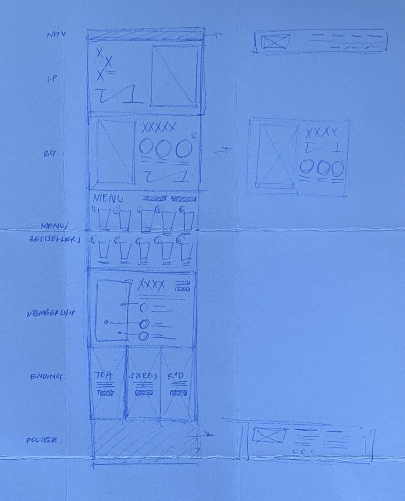

Although TP TEA, my favorite boba store back at home, already has a branded interface, I wanted to bring a more technical and user-driven focus to a website that currently seems to be more storytelling and aesthetic-driven.

Although TP TEA, my favorite boba store back at home, already has a branded interface, I wanted to bring a more technical and user-driven focus to a website that currently seems to be more storytelling and aesthetic-driven.
While analyzing the website, I categorized its usability issues into three categories: efficiency, learnability, and memorability.
Using WebAIM WAVE, software that detects various accessibility issues for the web, I also discovered other errors, including missing alternative text for images, empty links, and broken ARIA references, in addition to other alerts.
For my sketches, I focused on both the structure of the page and on working through sections where I felt visual hierarchy was a bit more disorganized.

The final sketch combined a few elements from the initial sketches, with a simplified page structure and modular components. Although it stayed pretty loyal to the original site, it also reorganized the information in a way that was more consistent and readable.

Taking these into Figma, I drew up some wireframes to resolve some
of the accessibility issues from before.
Some of the improvements made to the page included a fixed
navigation bar for easy access to information, combining related
page sections to condense the page, placing buttons in consistent
and identifiable locations, adding a site directory footer that
groups a link index with TP TEA's social icons, and eliminating
pop-ups. On smaller screen sizes, horizontal scrolling is also
introduced to save vertical space.


The style guide sums up the general design direction for the hifi mockups, including type, color, graphic, and interaction.

Each of the hifi mockups goes into more detail on the designs for each screen size, based on the lofi wireframes.


The final redesign implements all of the hifi designs from before, with some minor tweaks to spacing to adapt to real-life sizing and modularity of CSS components.
Even though I have had a decent amount of frontend and UI/UX experience, I still felt like I was able to learn some more CSS techniques that I hadn't known before, and seeing this website through a more accessibility-focused lens rather than one that was more graphic design-focused was also interesting as well.